컴퓨터응용선반기능사 (2009-01-18 기출문제)
1과목: 기계재료 및 요소
1. 열처리에서 재질을 경화시킬 목적으로 강을 오스테나이트 조직의 영역으로 가열한 후 급냉시키는 열처리는?
- 뜨임
- 풀림
- 담금질
- 불림
(정답률: 84%)

2. Cu 3.5 ~ 4.5%, Mg 1 ~ 1.5%, Si 0.5~ 1.0%, 나머지 Al인 합금으로 무게를 중요시한 항공기나 자동차에 사용되는 고력 Al 합금인 것은?
- 두랄루민
- 하이드로날륨
- 알드레이
- 내식 알루미늄
(정답률: 85%)
3. 미끄럼 베어링과 비교한 구름베어링의 특징에 대한 설명으로 틀린 것은?
- 마찰계수가 작고 특히 기동 마찰이 적다.
- 규격화되어 있어 표준형 양산품이 있다.
- 진동하중에 강하고 호환성이 없다.
- 진동체가 있어서 고속회전에 불리하다.
(정답률: 50%)
4. 다음 그림에서 W=300N의 하중이 작용하고 있다. 스프링 상수가 k1=5N/㎜, k2=10N/㎜라면, 늘어난 길이는 몇 ㎜ 인가?
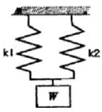
- 15
- 20
- 25
- 30
(정답률: 53%)
5. 보스와 축의 둘레에 여러 개의 키(key)를 깍아 붙인 모양으로 큰 동력을 전달할 수 있고 내구력이 크면, 축과 보스의 중심을 정확하게 맞출 수 있는 특징을 가지는 것은?
- 새들 키
- 원뿔 키
- 반달 키
- 스플라인
(정답률: 67%)
6. 비틀림 각이 30°인 헬리컬 기어에서 잇수가 40이고, 축 직각 모듈이 4일때 피치원의 직경은 몇 ㎜인가?
- 160
- 170.27
- 158
- 184.75
(정답률: 61%)
7. 니켈-크롬강에서 나타나는 뜨임취성을 방지하기 위해 첨가하는 원소는?
- 크롬(Cr)
- 탄소(C)
- 몰리브덴(Mo)
- 인(P)
(정답률: 48%)
8. 브레이크의 마찰면이 원판으로 되어 있고 원판의 수에 따라 단판 브레이크와 다판 브레이크로 분류되는 것은?
- 블록 브레이크
- 밴드 브레이크
- 드럼 브레이크
- 디스크 브레이크
(정답률: 55%)
9. V벨트는 단면 형상에 따라 구분되는데 가장 단면이 큰 벨트의 형은?
- A
- C
- E
- M
(정답률: 52%)
10. Cu에 60~70%의 Ni 함유량을 첨거한 Ni-Cu계의 합금이며, 내식성이 좋으므로 화학 공업용 재료로 많이 쓰이는 재료는 어느 것인가?
- Y합금
- 니크롬
- 모넬메탈
- 콘스탄탄
(정답률: 37%)
11. 상온 취성(Cold Shortness)의 주된 원인이 되는 물질로 가장 적합한 것은?
- 탄소(C)
- 규소(Si)
- 인(P)
- 황(S)
(정답률: 47%)
12. 미터 나사에 대한 설명으로 올바른 것은?
- 나사산의 각도는 60° 이다.
- ABC 나사라고도 한다.
- 운동용 나사이다.
- 피치는 1인치당 나사산의 수로 나타낸다.
(정답률: 55%)
13. 구리에 니켈 40~45%의 함유량을 첨가하는 합금으로 통신기, 전열선 등의 전기저항 재료로 이용되는 것은?
- 모넬메탈
- 콘스탄탄
- 엘린바
- 인바
(정답률: 64%)
14. 가공재료의 단면에 수직 방향으로 작용하는 하중은?
- 전단 하중
- 굽힘 하중
- 인장 하중
- 비틀림 하중
(정답률: 45%)
15. 강과 비교한 주철의 특성이 아닌 것은?
- 주조성이 우수하다.
- 복잡한 형상을 생산할 수 있다.
- 주물제품을 값싸게 생산 할 수 있다.
- 강에 비해 강도가 비교적 높다.
(정답률: 62%)
2과목: 기계제도(절삭부분)
16. 치수 숫자와 함께 사용되는 기호로 45° 모떼기를 나타내는 기호는?
- C
- R
- K
- M
(정답률: 86%)
17. 바퀴의 암(Arm)이나 리브(Rib)의 단면 실형을 회전도시 단면도로 도형 내에 그릴 경우 사용하는 선의 종류는?(단 단면부 전후를 끊지 않고 도형 내에 겹쳐서 그리는 경우)
- 가는 실선
- 굵은 실선
- 가상선
- 절단면
(정답률: 49%)
18. 표면의 결 도시방법에서 제거 가공을 허락하지 않는 것을 지시하고자 할 때 사용하는 제도 기호가 옳은 것은?
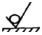
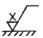
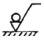
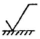
(정답률: 78%)
19. 나사의 호칭이 L 2줄 M50 × 2-6H로 표시된 나사에 6H는 무엇을 표시하는가?
- 줄수
- 암나사의 등급
- 피치
- 나사 방향
(정답률: 69%)
20. 보기와 같은 도면에서 C부의 치수는?
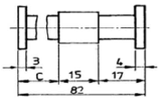
- 43
- 47
- 50
- 53
(정답률: 86%)
21. 기계 제도에서 굵은 1점 쇄선을 사용하는 경우로 가장 적합한 것은?
- 대상물의 보이는 구분의 겉 모양을 표시하기 위하여 사용한다.
- 치수를 기입하기 위하여 사용한다.
- 도영의 중심을 표시하기 위하여 사용한다.
- 특수한 가공부위를 표시하기 위하여 사용한다.
(정답률: 63%)
22. 대칭도를 나타내는 기호로 어느 것인가?
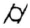
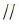
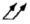
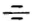
(정답률: 69%)
23. KS 기어 제도의 도시방법 설명으로 올바른 것은?
- 잇봉우리원은 가는 실선으로 그린다.
- 피치원은 가는 1점 쇄선으로 그린다.
- 이골원은 굵은 1점 쇄선으로 그린다.
- 잇줄 방향은 보통 2개의 가는 1점 쇄선으로 그린다.
(정답률: 60%)
24. 헐거운 끼워 맞춤에서 구멍의 최소 허용 치수와 축의 최대 허용 치수와의 차를 무엇이라 하는가?
- 최소 틈새
- 최대 틈새
- 최소 죔쇄
- 최대 죔쇄
(정답률: 60%)
25. 보기 입체도에서 화살표 방향을 정면으로 할 때, 평면도로 가장 적합한 것은?
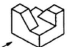
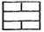
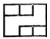
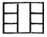
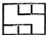
(정답률: 81%)
26. 공작기계를 가공능률에 따라 분류할 때 전용 공작 기계에 속하는 것은?
- 플레이너
- 드릴링 머신
- 트랜스퍼 머신
- 밀링 머신
(정답률: 41%)
27. 선반 작업에서 절삭속도 및 바이트 경사각이 클 때, 연성의 재료를 가공할 때 절삭 깊이가 작을 때 주로 생기는 칩의 형태는?
- 유동형 칩
- 절단형 칩
- 균열혈 칩
- 열단형 칩
(정답률: 71%)
28. 현재 많이 사용되는 인공합성 절삭공구 재료로 고속작업이 가능하며, 낙산재료, 고속도강, 담금질강, 내열강 등의 절삭에 적합한 공구 재료는?
- 초경합금
- 세라믹
- 서멧
- 입방정 질화 붕소(CBN)
(정답률: 43%)
29. 기계가공에서 사용되는 절삭유제의 작용으로 틀린 것은?
- 냉각작용
- 윤활마찰
- 세척작용
- 마찰작용
(정답률: 76%)
30. 다음 중 보통선반의 크기를 나타내는 것으로만 조합된 항은?
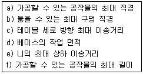
- b, c
- d, e
- b, f
- a, f
(정답률: 54%)
3과목: 기계공작법
31. 숫돌바퀴의 구성 3요소는?
- 숫돌입자, 결합제, 기공
- 숫돌입자, 입도, 성분
- 숫돌입자, 결합도, 입도
- 숫돌입자, 결합제, 성분
(정답률: 64%)
32. 선반 바이트에서 공작물과의 마찰을 줄이기 위하여 주어지는 각도는?
- 옆면 경사각
- 여유각
- 인선각
- 윗면 경사각
(정답률: 77%)
33. 선반 가공에서 절삭 깊이를 1.5mm로 원통 깍기를 할 때 공작물의 지름이 작아지는 양은 몇 mm인가?
- 1.5
- 3.0
- 0.75
- 1.55
(정답률: 63%)
34. 줄 작업을 할 때 주의할 사항으로 틀린 것은?
- 줄을 밀 때, 체중을 몸에 가하여 줄을 민다.
- 보통 줄의 사용순서는 황목→세목→중목→유목 순으로 작업한다.
- 눈은 항상 가공물을 보면서 작업한다.
- 줄을 당길 때는 가공물에 압력을 주지 않는다.
(정답률: 64%)
35. 다음 그림과 같이 사인 바를 사용하여 각도를 측정하는 경우 a는 몇 도인가?
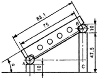
- 20°
- 25°
- 30°
- 35°
(정답률: 57%)
36. 연삭가공을 할 때 숫돌에 눈메움, 무딤 등이 발생하여 절삭상태가 나빠진다. 이때 예리한 절삭날을 숫돌표면에 생성하여 절삭성을 회복시키는 작업은?
- 드레싱
- 리밍
- 보링
- 호빙
(정답률: 78%)
37. 공작물 통과방식의 센터리스 연삭에서 공작물에 이송을 주는 부분은?
- 조정 숫돌바퀴
- 연삭 숫돌바퀴
- 받침반
- 테이블
(정답률: 40%)
38. 비교 측정기에 해당하는 것은?
- 버니어 캘리퍼스
- 마이크로미터
- 다이얼 게이지
- 하이트 게이지
(정답률: 66%)
39. 밀링머신에서 공작물을 가공할 때, 발생하는 떨림(chattering) 영향으로관계가 가장 적은 것은?
- 가공 면의 표면이 거칠어진다.
- 밀링 커터의 수명을 단축시킨다.
- 생산능률을 저하 시킨다.
- 가공물의 정밀도가 향상된다.
(정답률: 82%)
40. 밀링커터의 절삭 속도(v)를 구하는 공식은?(단, v:절삭속도(m/min), n:커터의 회전수(rpm), d:밀링 커터의 지름(㎜))
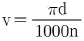
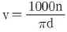
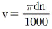
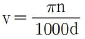
(정답률: 77%)
4과목: CNC공작법 및 안전관리
41. 호닝(Honing)에 대한 설명으로 틀린 것은?
- 숫돌의 길이는 가공 구멍 길이와 같은 것을 사용한다.
- 냉각액은 등유 또는 경유에 리드(lard)유를 혼합해 사용한다.
- 공작물 재질이 강과 주강인 경우는 WA입자의 숫돌 재료를 쓴다.
- 완복운동과 회전운동에 의한 교차각이 40~50° 일 때 다듬질 양이 가장 크다.
(정답률: 35%)
42. 분할대(index table)에 대한 내용으로 틀린 것은?
- 다이빙 헤드(divinding head) 또는 스파이럴 헤드(spiral head)라 한다.
- 밀링머신에서 분할작업 및 각도 변위가 요구되는 작업에 사용한다.
- 밀링커터 제작 등에는 이용하지 않는다.
- 분할법에는 직접 분할법, 단식 분할법, 차동 분할법이 있다.
(정답률: 61%)
43. CNC 선반에서 그림의 B→C 경로의 가공 프로그램으로 틀린 것은?
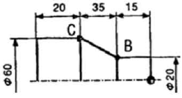
- G01 X60. Z-50. ;
- G01 U60. Z-50. ;
- G01 U40. W-35. ;
- G01 X60. W-35. ;
(정답률: 38%)
44. 황삭 엔드밀의 절삭속도는 31.4m/min, 회전당 이송거리를 0.3mm/rev로 선택하면, 주축 회전수 N(rpm)과 이송속도 F(mm/min)는 각각 얼마인가?(단, 엔드밀 직경은 20mm이고 π=3.14이다.)
- 500, 180
- 500, 150
- 550, 180
- 550, 150
(정답률: 47%)
45. 다음은 CNC선반 프로그램의 일부이다. 이 프로그램에서 밑줄 친 "U2.0"이 의미하는 것은?
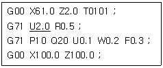
- X축 1회 절입량
- X축 도피량
- X축 정삭 여유량
- Z축 정삭 여유량
(정답률: 54%)
46. 범용 공작기계와 비교한 NC 공작기계의 특징 중 틀린 것은?
- 가공하기 어려웠던 복잡한 형상의 가공을 할 수 있다.
- 한 사람이 여러 대의 NC 공작기계를 관리할 수 있다.
- 지그와 고정구가 많이 필요하고 품질이 안정된다.
- 제품의 균일성을 향상시킬 수 있다.
(정답률: 70%)
47. CNC 공작 기계의 3가지 제어 방식에 속하지 않는 것은?
- 위치결정 제어
- 직선절삭 제어
- 원호절삭 제어
- 윤곽절삭 제어
(정답률: 46%)
48. CNC 공작 기계에서 간단한 프로그램을 편집과 동시에 시험적으로 시행해 볼 때 사용하는 모드는?
- MDI 모드
- JOG 모드
- EDIT 모드
- AUTO 모드
(정답률: 52%)
49. CNC 선반에서 주축의 최고 회전수를 1500rpm으로 제한하기 위한 지령으로 옳은 것은?
- G28 S1500
- G30 S1500 ;
- G50 S1500 ;
- G94 S1500 ;
(정답률: 64%)
50. CNC 선반에서 주축을 정지시키기 위한 보조기능 M 코드는?
- M02
- M03
- M04
- M⑤
(정답률: 59%)
51. CNC 선반에서 나사 가공과 관계없는 G 코드는?
- G32
- G75
- G76
- G92
(정답률: 49%)
52. 다음은 머시닝센터 프로그램의 일부를 나타낸 것이다. ( ) 안에 알맞은 것은?
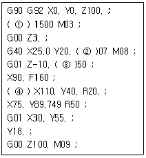
- F, M, S, G02
- S, D, F, G01
- S, H F, G00
- S, D, F, G03
(정답률: 56%)
53. CAD/CAM 시스템의 입출력 장치에서 출력장치에 해당하는 것은?
- 프린터
- 조이스틱
- 라이트 펜
- 마우스
(정답률: 83%)
54. CNC공작기계에서 일상적인 점검 사항 중 매일 점검 사항이 아닌 것은?
- 외관 점검
- 압력 점검
- 기계 정도 점검
- 유량 점검
(정답률: 63%)
55. CNC 공작기계를 사용할 때 안전사항으로 틀린 것은?
- 칩을 제거할 때는 시간절약을 위하여 맨손으로 빨리 처리한다.
- 칩이 비산할 때는 보안경을 착용한다.
- 기계 위에 공구를 올려놓지 않는다.
- 절삭 공구는 가능한 짧게 설치하는 것이 좋다.
(정답률: 85%)
56. 밀링 작업시 안전 및 유의 사항으로 틀린 것은?
- 바이스 및 일감을 단단하게 고정한다.
- 정면 밀링 커터 작업을 할 때에는 보안경을 착용한다.
- 주축을 변속할 때는 저속 상태에서 해야 한다.
- 테이블 위에는 측정기나 공구를 올려놓지 말아야 한다.
(정답률: 82%)
57. 다음 그림에서 B(25,5)에서, 반시계 360° 원호가공을 하려고 한다. 올바르게 명령한 것은?
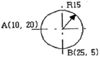
- G02 J15. ;
- G02 J-15. ;
- G03 J15 ;
- G03 J-15. ;
(정답률: 38%)
58. CNC 선반 프로그램에서 이송과 관련된 준비기능과 그 단위가 맞게 연결된 것은?
- G98 : ㎜/min, G99 : ㎜/rev
- G98 : ㎜/rev, G99 : ㎜/min
- G98 : ㎜/rev, G99 : ㎜/rev
- G98 : ㎜/min, G99 : ㎜/min
(정답률: 63%)
59. 절삭공구와 프로그램 원점까지의 거리가 그림과 같을 경우 좌표계 설정 지령으로 맞는 것은?
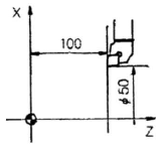
- G50 X25. Z100. T0100 ;
- G50 X100. Z150. T0100 ;
- G50 X50. Z100. T0100 ;
- G50 X100. Z100. T0100 ;
(정답률: 60%)
60. CNC 프로그램에서 공구 지름 보정과 관계가 없는 준비 기능은?
- G40
- G41
- G42
- G43
(정답률: 61%)